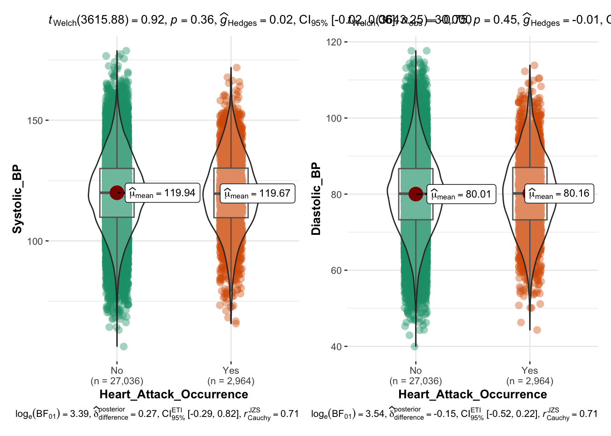

pacman::p_load(tidyverse,patchwork,plotly,ggdist, ggridges,ggstatsplot)Take-home Exercise 01: Visualizing and Uncovering Trends on Heart Attacks in Japan
1 Overview
1.1 Background
Heart disease remains one of the leading causes of mortality worldwide, and Japan is no exception. Despite the country’s reputation for longevity and a traditionally healthy diet, heart-related health issues—including heart attacks—continue to be a significant public health concern. The impact of heart attacks varies across different age groups, with risk factors and outcomes often differing between younger and older individuals. While Japan’s aging population naturally sees a higher prevalence of heart attacks among adults, recent trends suggest that younger individuals are also increasingly at risk, raising concerns about lifestyle habits and diet.
Historically, Japan’s diet—rich in fish, vegetables, and low in saturated fats—has been associated with lower cardiovascular disease rates. However, research by Iso (2011) has highlighted a gradual shift toward Westernized dietary patterns, characterized by increased consumption of meat and processed foods, which has contributed to rising cholesterol levels and a greater risk of heart disease. Additionally, lifestyle factors such as physical inactivity, smoking, and alcohol consumption have played a role in shaping cardiovascular health trends within the country.
Medical advancements and early interventions have improved survival rates, but the rising burden of cardiovascular diseases still calls for further research and public awareness.
1.2 Objectives
This article aims to explore the patterns of heart attacks in Japan across different age groups and shedding light on key factors contributing to their occurrence. By examining trends, potential risk factors, and demographic variations, we seek to provide insights into how heart attack cases differ between youth and adults.
Through data-driven visualizations, we will highlight the prevalence, underlying causes, and potential warning signs associated with heart attacks in Japan. The goal is to help healthcare professionals, policymakers, and the general public better understand the evolving landscape of cardiovascular health and to encourage proactive measures for prevention and early detection.
2 Methodology & R Packages Used
We will follow the outlined methodology flow for this exercise, starting with data import, followed by data preparation, and concluding with statistical graphics, including exploratory analysis to draw insights.
The following R packages will be used to achieve the objective.
| Package | Explanation |
|---|---|
| tidyverse | to efficiently manipulate and clean data, utilizing functions from packages like dplyr and tidyr for data wrangling. |
| ggplot2 | to create informative and aesthetically pleasing visualizations, such as histograms and boxplots, to analyze the data |
| patchwork | to combine multiple ggplot2 plots into a cohesive layout, making it easier to present related visualizations side by side |
| plotly | |
| ggstatsplot | |
3 The Dataset
The dataset, Heart Attack in Japan: Youth vs. Adult, used in this analysis was obtained from Kaggle. It contains data for heart attack cases across different age groups.
This dataset includes both numerical and categorical variables related to cardiovascular health, such as cholesterol levels, blood pressure, heart rate, and lifestyle factors. These indicators are crucial in assessing the likelihood of heart attacks and understanding how risk factors differ between younger and older populations.
In the next section, we will import the raw dataset and refine it further to ensure its readiness for visual analysis and gain deeper insights.
4 Data Preparation
4.1 Importing the Data
The code chunk below imports japan_heart_attack_dataset.csv into R environment by using read_csv() function of readr package. readr is one of the tidyverse package.
heartattack_data <- read_csv("data/raw/japan_heart_attack_dataset.csv")Let’s view the structure of the dataset using glimpse(), which allows us to see data structure and variable names as well as types.
glimpse(heartattack_data)Rows: 30,000
Columns: 32
$ Age <dbl> 56, 69, 46, 32, 60, 25, 78, 38, 56, 75, 36, 40…
$ Gender <chr> "Male", "Male", "Male", "Female", "Female", "F…
$ Region <chr> "Urban", "Urban", "Rural", "Urban", "Rural", "…
$ Smoking_History <chr> "Yes", "No", "Yes", "No", "No", "No", "No", "Y…
$ Diabetes_History <chr> "No", "No", "No", "No", "No", "No", "Yes", "No…
$ Hypertension_History <chr> "No", "No", "No", "No", "No", "No", "Yes", "No…
$ Cholesterol_Level <dbl> 186.4002, 185.1367, 210.6966, 211.1655, 223.81…
$ Physical_Activity <chr> "Moderate", "Low", "Low", "Moderate", "High", …
$ Diet_Quality <chr> "Poor", "Good", "Average", "Good", "Good", "Go…
$ Alcohol_Consumption <chr> "Low", "Low", "Moderate", "High", "High", "Hig…
$ Stress_Levels <dbl> 3.644786, 3.384056, 3.810911, 6.014878, 6.8068…
$ BMI <dbl> 33.96135, 28.24287, 27.60121, 23.71729, 19.771…
$ Heart_Rate <dbl> 72.30153, 57.45764, 64.65870, 55.13147, 76.667…
$ Systolic_BP <dbl> 123.90209, 129.89331, 145.65490, 131.78522, 10…
$ Diastolic_BP <dbl> 85.68281, 73.52426, 71.99481, 68.21133, 92.902…
$ Family_History <chr> "No", "Yes", "No", "No", "No", "No", "No", "No…
$ Heart_Attack_Occurrence <chr> "No", "No", "No", "No", "No", "No", "No", "No"…
$ Extra_Column_1 <dbl> 0.40498852, 0.03627815, 0.85297888, 0.39085280…
$ Extra_Column_2 <dbl> 0.43330004, 0.51256694, 0.21959083, 0.29684675…
$ Extra_Column_3 <dbl> 0.62871236, 0.66839275, 0.61343656, 0.15572404…
$ Extra_Column_4 <dbl> 0.70160955, 0.11552874, 0.50800995, 0.87025144…
$ Extra_Column_5 <dbl> 0.49814235, 0.42381938, 0.90066981, 0.39035591…
$ Extra_Column_6 <dbl> 0.007901312, 0.083932768, 0.227205241, 0.40318…
$ Extra_Column_7 <dbl> 0.79458257, 0.68895108, 0.49634358, 0.74140891…
$ Extra_Column_8 <dbl> 0.29077922, 0.83016364, 0.75210679, 0.22396813…
$ Extra_Column_9 <dbl> 0.49719307, 0.63449028, 0.18150125, 0.32931387…
$ Extra_Column_10 <dbl> 0.52199452, 0.30204337, 0.62918031, 0.14319054…
$ Extra_Column_11 <dbl> 0.79965663, 0.04368285, 0.01827617, 0.90778075…
$ Extra_Column_12 <dbl> 0.72239788, 0.45166789, 0.06322702, 0.54232201…
$ Extra_Column_13 <dbl> 0.1487387, 0.8786714, 0.1465122, 0.9224606, 0.…
$ Extra_Column_14 <dbl> 0.8340099, 0.5356022, 0.9972962, 0.6262165, 0.…
$ Extra_Column_15 <dbl> 0.061632229, 0.617825340, 0.974455410, 0.22860…At a glimpse, we see that there at 32,000 rows and 32 columns.
4.2 Filtering for Relevant Variables
We notice that there were certain columns titled “Extra_Column_” from column number 18 to 32. We will remove these columns as there are no explanations in the metadata from the source, leaving us with 17 variables to work with.
heartattack_data <- heartattack_data %>% select(-c(18:32))We also notice that this dataset also contains data for people with no heart attack occurrence (in the Heart_Attack_Occurrence column). Since we are performing exploratory data analysis (EDA), it would be valuable to keep both groups, as this allows us to identify and compare characteristics like age, gender, lifestyle, or pre-existing conditions between those who had a heart attack and those who didn’t, potentially letting us uncover patterns or trends that can inform your study.
4.3 Checking for Duplicates and Missing values
It is essential to check for duplicates and missing values before we move forward. We will use the following code to check for them.
The duplicated() function in the base package is used to check for duplicates in heartattack_data.
sum(duplicated(heartattack_data))[1] 0The colSums() function in the base package is used to check for missing values in heartattack_data.
colSums(is.na(heartattack_data)) Age Gender Region
0 0 0
Smoking_History Diabetes_History Hypertension_History
0 0 0
Cholesterol_Level Physical_Activity Diet_Quality
0 0 0
Alcohol_Consumption Stress_Levels BMI
0 0 0
Heart_Rate Systolic_BP Diastolic_BP
0 0 0
Family_History Heart_Attack_Occurrence
0 0 There are no duplicates and missing values in this dataset.
4.4 Grouping Variables into Categories
Some numerical variables (represented as “dbl” when we checked data structure in section 4.1), will be grouped into the following categories for meaningful insights:
Age: For this variable which ranges from 18 to 79, we will use equal bins for each category, categorized as:
Young: 18–39
Middle-Aged: 40–59
Old: 60–79
Cholesterol Level: According to guidelines from the American Heart Association (AHA) and National Heart, Lung, and Blood Institute (NHLBI) (Lauer et al, 2004), a desirable low cholesterol level is Below 200 mg/dL, a borderline high medium would be between 200 to 239 mg/dL and high cholesterol level is considered as 240 mg/dL and above.To align with this finding, we will categorize as:
- Low: 80–199 mg/dL
- Medium: 200–239 mg/dL
- High: 240–336 mg/dL
Stress Level: A common method to measure stress is the Perceived Stress Scale (Cohen,1994) where individuals rate their stress from 0 (no stress) to 10 (extreme stress). Since our dataset usesa 0 to 10 range, it’s likely a self-reported scale, where 0-3 represents minimal or manageable stress, 4-6 represents moderate stress and 7-10 represents high to extreme stress, with potential health risks. Therefore, we will categorize the stress levels as:
- Low: 0.000–3.999
- Medium: 4.000–6.999
- High: 7.000–10.000
Heart Rate: According to Mayo Clinic, low/below normal heart rate is below 60 bpm, a normal healthy range is 60–100 bpm, and above normal is above 100 bpm. Aligning with this, our categories will be:
Low: 30.000–59.999 bpm
Normal: 60.000–99.999 bpm
High: 100.000–108.7812 bpm
heartattack_data <- heartattack_data %>%
mutate(
AgeCat = case_when(
Age >= 18 & Age <= 39 ~ "Young",
Age >= 40 & Age <= 59 ~ "Middle-Aged",
Age >= 60 & Age <= 79 ~ "Old"
),
Cholesterol = case_when(
Cholesterol_Level >= 80.0000 & Cholesterol_Level <= 199.9999 ~ "Low",
Cholesterol_Level >= 200.0000 & Cholesterol_Level <= 239.9999 ~ "Medium",
Cholesterol_Level >= 240.0000 & Cholesterol_Level <= 336.9999 ~ "High"
),
Stress = case_when(
Stress_Levels >= 0.000 & Stress_Levels <= 3.999999 ~ "Low",
Stress_Levels > 4.000 & Stress_Levels <= 6.999999 ~ "Medium",
Stress_Levels > 7.000 & Stress_Levels <= 10.000 ~ "High"
),
HeartRate = case_when(
Heart_Rate >= 30.000 & Heart_Rate <= 59.99999 ~ "Low",
Heart_Rate > 60.000 & Heart_Rate <= 99.99999 ~ "Normal",
Heart_Rate > 100.000 & Heart_Rate <= 108.78217 ~ "High"
),
BMICat = case_when(
BMI >= 0 & BMI <= 17.999999 ~ "Underweight",
BMI > 18 & BMI <= 24.999999 ~ "Normal",
BMI > 25 ~ "Overweight"
)
)4.5 Deriving Interaction Variables
4.5.1 Gender & Age
heartattack_data$Gender_AgeCat_Interaction <- with(heartattack_data,
ifelse(Gender == "Female" & AgeCat == "Young", "YoungFemale",
ifelse(Gender == "Female" & AgeCat == "Middle-Aged", "Middle-AgedFemale", ifelse(Gender == "Female" & AgeCat == "Old", "OldFemale",
ifelse(Gender == "Male" & AgeCat == "Young", "YoungMale",ifelse(Gender == "Male" & AgeCat == "Middle-Aged", "Middle-AgedMale", "OldMale"))))))4.5.2 Gender & HeartAttack
heartattack_data$Gender_HeartAttack_Interaction <- with(heartattack_data,
ifelse(Gender == "Female" & Heart_Attack_Occurrence == "Yes", "Female with HeartAttack",
ifelse(Gender == "Female" & Heart_Attack_Occurrence == "No", "Female without HeartAttack",
ifelse(Gender == "Male" & Heart_Attack_Occurrence == "Yes", "Male with HeartAttack", "Male without HeartAttack"))))4.5.3 Region & HeartAttack
heartattack_data$Region_HeartAttack_Interaction <- with(heartattack_data,
ifelse(Region == "Urban" & Heart_Attack_Occurrence == "Yes", "Urban HeartAttack",
ifelse(Region == "Urban" & Heart_Attack_Occurrence == "No", "Urban No HeartAttack",
ifelse(Region == "Rural" & Heart_Attack_Occurrence == "Yes", "Rural HeartAttack", "Rural No HeartAttack"))))4.5.4 BMI & Stress
heartattack_data$Stress_BMI_Interaction <- with(heartattack_data,
ifelse(BMICat == "Overweight" & Stress == "High", "HighStressOverweight",
ifelse(BMICat == "Overweight" & Stress == "Medium", "MedStressOverweight", ifelse(BMICat == "Overweight" & Stress == "Low", "LowStressOverweight",
ifelse(BMICat == "Normal" & Stress == "High", "HighStressNormal",
ifelse(BMICat == "Normal" & Stress == "Medium", "MedStressNormal", ifelse(BMICat == "Normal" & Stress == "Low", "LowStressNormal",
ifelse(BMICat == "Underweight" & Stress == "High", "HighStressUnderweight",
ifelse(BMICat == "Underweight" & Stress == "Medium", "MedStressUnderweight", "LowStressUnderweight" )))))))))4.6 Convert Data Types
We note that all variables are in the correct data types. However, we will convert the categorical columns such as Smoking_History,Diabetes_History, Hypertension_History, Family_History Heart_Attack_Occurrence, and our newly created columns as factor for better visualisation and to put the categories in order.
heartattack_data <- heartattack_data %>%
mutate(
Smoking_History = factor(Smoking_History, levels = c("No", "Yes")),
Diabetes_History = factor(Diabetes_History, levels = c("No", "Yes")),
Hypertension_History = factor(Hypertension_History, levels = c("No", "Yes")),
Family_History = factor(Family_History, levels = c("No", "Yes")),
Heart_Attack_Occurrence = factor(Heart_Attack_Occurrence, levels = c("No", "Yes")),
# Setting specific orders for more than 2 categorical factors
Alcohol_Consumption = factor(Alcohol_Consumption, levels = c("None", "Low", "Moderate", "High")),
Diet_Quality = factor(Diet_Quality, levels = c("Poor", "Average", "Good")),
Physical_Activity = factor(Physical_Activity, levels = c("Low", "Moderate", "High")),
AgeCat = factor(AgeCat, levels = c("Young", "Middle-Aged", "Old")),
Cholesterol = factor(Cholesterol, levels = c("Low", "Medium", "High")),
Stress = factor(Stress, levels = c("Low", "Medium", "High")),
HeartRate = factor(HeartRate, levels = c("Low", "Normal", "High")),
BMICat = factor(BMICat, levels = c("Underweight", "Normal", "Overweight")),
Gender_AgeCat_Interaction =factor(Gender_AgeCat_Interaction, levels = c("YoungFemale", "YoungMale", "Middle-AgedFemale","Middle-AgedMale","OldFemale","OldMale")),
Gender_HeartAttack_Interaction = factor(Gender_HeartAttack_Interaction, levels = c("Female with HeartAttack", "Female without HeartAttack", "Male with HeartAttack","Male without HeartAttack")),
Region_HeartAttack_Interaction = factor(Region_HeartAttack_Interaction, levels = c("Urban HeartAttack", "Urban No HeartAttack", "Rural HeartAttack","Rural No HeartAttack"))
)Lastly, save the prepared output to rds format using the following code chunk. We will use this newly prepared data from this point.
write_rds(heartattack_data, file = "data/rds/heartattack.rds")heartattack <- read_rds("data/rds/heartattack.rds")We will create a separate subset of the dataset for individuals who reported ‘Yes’ for Heart Attack Occurrence, enabling us to conduct further analysis on the distribution within this specific group.We will create a separate subset of the dataset for individuals who reported ‘Yes’ for Heart Attack Occurrence, enabling us to conduct further analysis on the distribution within this specific group.
yesheartattack <- heartattack %>%
filter(Heart_Attack_Occurrence == "Yes")write_rds(yesheartattack, file = "data/rds/yesheartattack.rds")yesheartattack <- read_rds("data/rds/yesheartattack.rds")5 Data Visualisation
5.1 Starting Big: Overview of Heart Attack Occurrence in Japan
5.1.1 Heart Attack Occurrence by Age Group and Gender
We will first explore the distribution of heart attack occurrences across different age groups and genders in Japan. By categorizing individuals into age groups (Young, Middle-Aged, and Old), we can observe trends in heart attack prevalence, with particular focus on gender differences. This helps identify which demographic groups are more vulnerable and gives us the overview.

# Compute percentage of Heart Attack Occurrence for each Age Category
age_summary <- yesheartattack %>%
group_by(AgeCat) %>%
summarise(Percentage = (n() / nrow(yesheartattack)) * 100)
# Compute percentage of Heart Attack Occurrence for each Gender
gender_summary <- yesheartattack %>%
group_by(Gender) %>%
summarise(Percentage = (n() / nrow(yesheartattack)) * 100)
# Define custom colors
custom_colors <- c("Young" = "#cfe7af", "Middle-Aged" = "#9cc567", "Old" = "#608e24")
# Plot 1: Heart Attack Occurrence by Age Category
p1 <- ggplot(age_summary, aes(x = AgeCat, y = Percentage, fill = AgeCat)) +
geom_bar(stat = "identity", color = "black") +
geom_text(aes(label = sprintf("%.1f%%", Percentage)), vjust = 1.5, size = 3) +
scale_fill_manual(values = custom_colors) +
labs(x = "Age Category") +
theme_minimal() +
theme(legend.position = "none", plot.title = element_blank(), axis.title.y = element_blank(),axis.title.x = element_blank())
# Plot 2: Heart Attack Occurrence by Gender
p2 <- ggplot(gender_summary, aes(x = Gender, y = Percentage, fill = Gender)) +
geom_bar(stat = "identity", color = "black") +
geom_text(aes(label = sprintf("%.1f%%", Percentage)), vjust = 1.5, size = 3) +
labs(x = "Gender") +
theme_minimal() +
theme(legend.position = "none", plot.title = element_blank(), axis.title.y = element_blank(),axis.title.x = element_blank())
# Plot 3: Heart Attack Occurrence by Age Category in Each Gender
p3 <- ggplot(yesheartattack, aes(x = Gender, fill = AgeCat)) +
geom_bar(position = "fill", color = "black") +
geom_text(
aes(label = scales::percent(..count.. / tapply(..count.., ..x.., sum)[..x..], accuracy = 0.1)),
stat = "count",
position = position_fill(vjust = 0.5),
size = 3, color = "black"
) +
scale_fill_manual(values = custom_colors) +
coord_flip() +
labs(x = "Gender", y = "Proportion", fill = "AgeCat") +
theme_minimal() +
theme(plot.title = element_blank())
(p1 + p2)/ p3 +
plot_layout(widths = c(1, 1, 1.5)) +
plot_annotation(title = "Heart Attack Occurrence by Age Group and Gender")
Insights
Gender and Heart Attack Vulnerability: Males are more prone to heart attacks compared to females, as observed in the dataset.
Vulnerability Across Age Groups: The Young Age Group (35.3%) emerges as the most vulnerable to heart attacks across both genders.
Among females, the Old Age Group is the second most vulnerable.
Among males, the Middle-Aged Age Group appears to be the second most vulnerable to heart attacks.
5.1.2 Heart Attack Occurrence by Lifestyle Factors & Medical History

There is no clear logical relationship observed between the levels of factors like alcohol consumption and heart attack occurrence. For example, low alcohol consumption does not correlate with a lower risk of heart attack, nor does high alcohol consumption correlate with a higher risk. However, we must note that a history of smoking appears to significantly increase the vulnerability to heart attack although test results suggest no association.
5.2 Zooming in Deeper
To gain a deeper understanding of heart attack occurrence, it is crucial to focus on the specific risk factors that contribute to this outcome. This section narrows the scope from a general overview of heart attacks to the key health factors that directly influence their occurrence. By examining these factors more closely, we aim to uncover how individual behaviors, medical histories, and other characteristics interact to shape heart attack risk. Therefore from this point onwards, we will focus on the subset of the dataset who indicated “Yes” for having experienced heart attack.
5.2.1 Vulnerability in Young Individuals: Focusing on BMI and Stress
In this section, we delve deeper into the factors influencing heart attack risk among young individuals, as this age group has the highest prevalence of heart attack cases across both genders. As identified in section 5.1.2, BMI plays a crucial role in heart attack occurrences, making it one of the most significant risk factors. Therefore, we now narrow our focus on the distribution of BMI categories within this young demographic, as it offers vital insights into how body weight and composition influence heart attack risk among younger populations.
Furthermore, we examine the interplay between stress levels and BMI, particularly within the “Overweight” category. Individuals classified as overweight may face an increased vulnerability to stress-related health risks, such as heart attacks. By analyzing how stress levels (Low, Medium, and High) are distributed within the Overweight BMI category, we gain a clearer understanding of how stress contributes to heart attack risk for this group.
The decision to focus specifically on the “Overweight” BMI category is driven by its higher prevalence in the data, which provides a more robust and statistically meaningful foundation for analysis. By concentrating on this group, we are able to explore a critical intersection of BMI and stress, which are significant contributors to heart attack occurrences in young individuals.
young_data <- yesheartattack %>% filter(AgeCat == "Young")
# Calculate the proportion of each BMI category in young_data
bmi_proportion_data <- young_data %>%
count(BMICat) %>%
mutate(Proportion = n / sum(n))
# Distribution of BMI in Young group
bmi_young <- ggplot(bmi_proportion_data, aes(x = BMICat, y = Proportion, fill = BMICat)) +
geom_bar(stat = "identity") +
geom_text(aes(label = scales::percent(Proportion, accuracy = 1)), vjust = 1.5, size = 4) +
labs(
y = "Proportion") +
scale_y_continuous(labels = scales::percent_format()) +
scale_fill_manual(values = c("Underweight" = "#9ddcf2", "Normal" = "#83bace", "Overweight" = "#0d8ab7")) +
theme_minimal() +
theme(legend.position = "none",
axis.text.x = element_text(angle = 45, hjust = 1, size = 12),
axis.title = element_text(size = 14, face = "bold"),
plot.title = element_blank(),
axis.title.x = element_blank())
# Calculate the proportion of stress levels within the overweight group
stress_overweight <- young_data %>%
count(Stress) %>%
mutate(Proportion = n / sum(n))
stress_overweight$Stress <- factor(stress_overweight$Stress, levels = c("High", "Medium", "Low"))
# Create the stacked bar chart for just overweight
stress_ow <- ggplot(stress_overweight, aes(x = "Overweight", y = Proportion, fill = Stress)) +
geom_bar(stat = "identity") +
geom_text(aes(label = scales::percent(Proportion, accuracy = 1)), position = position_stack(vjust = 0.5), size = 4) +
scale_y_continuous(labels = scales::percent_format()) +
scale_fill_manual(values = c("Low" = "#9cc567", "Medium" = "#83bace", "High" = "#f7a8b8")) +
labs(x = NULL, y = "Proportion", title = NULL) +
theme_minimal() +
theme(axis.text.x = element_text(size = 12),
axis.title.y = element_blank())
bmi_young + stress_ow +
plot_layout(widths = c(2, 1)) +
plot_annotation(title = "Proportion of BMI and Stress Level in Young Individuals who had a Heart Attack")
Insight
In young individuals, the Overweight BMI category with Medium stress levels shows the highest proportion of heart attack cases. This suggests a strong correlation between being overweight and experiencing medium levels of stress, which may exacerbate the likelihood of heart attacks. The visualization emphasizes the need for targeted interventions focusing on stress management and weight control in this demographic.
5.2.2 Stress Levels in Gender and Regions
Exploring the influence of both gender and region (urban vs. rural) on heart attack occurrence among overweight individuals with varying stress levels can provide valuable insights into disparities in cardiovascular risk. By examining how gender and region interact with different stress levels, we aim to uncover any significant patterns that may indicate higher vulnerability to heart attacks. Specifically, we will focus on comparing the Medium Stress group (which shows the highest proportion of heart attack cases) with the High Stress group to determine whether stress levels amplify the effects of gender and region in heart attack risk.

# Filter the data for Overweight individuals with Stress levels
region_stress_overweight <- yesheartattack %>%
filter(BMICat == "Overweight" & Stress %in% c("High", "Medium"))
# Calculate the proportion of Stress levels by Region
proportion_region_stress <- region_stress_overweight %>%
group_by(Region, Stress) %>%
summarise(Proportion = n() / nrow(region_stress_overweight) * 100)
# Region plot
regions<- ggplot(proportion_region_stress, aes(x = Region, y = Proportion, fill = Region)) +
geom_bar(stat = "identity", show.legend = FALSE, color = "black") +
geom_text(aes(label = sprintf("%.1f%%", Proportion)), vjust = 1.5, size = 3) +
labs(x = "Region", y = "Proportion (%)") +
scale_fill_manual(values = c("Rural" = "#9cc567", "Urban" = "#e79251")) +
facet_wrap(~ Stress, ncol = 2) +
theme_minimal()+
theme(axis.title.y = element_blank(),
plot.title=element_blank())
# Calculate the proportion within each Stress level group
proportion_heartattack <- high_medium_stress_overweight_yes %>%
group_by(Stress, Gender) %>%
summarise(Proportion = n() / nrow(high_medium_stress_overweight_yes) * 100)
# Gender plot
gender<- ggplot(proportion_heartattack, aes(x = Gender, y = Proportion, fill = Gender)) +
geom_bar(stat = "identity", show.legend = FALSE, color = "black") +
geom_text(aes(label = sprintf("%.1f%%", Proportion)), vjust = 1.5, size = 3) +
labs(x = "Gender", y = "Proportion of Heart Attack Cases") +
scale_fill_manual(values = c("Female" = "#f7a8b8", "Male" = "#83bace")) +
facet_wrap(~ Stress, ncol = 2) +
theme_minimal()+
theme(axis.title.y = element_blank())
# Filter the data for Overweight individuals
overweight_data <- yesheartattack %>%
filter(BMICat == "Overweight")
# Calculate the proportion of heart attack cases by Gender and Region
proportion_heartattack_group <- overweight_data %>%
group_by(Gender, Region) %>%
summarise(Proportion = n() / nrow(overweight_data) * 100)
# Create the bar plot
gender_reg <- ggplot(proportion_heartattack_group, aes(x = interaction(Gender, Region), y = Proportion, fill = interaction(Gender, Region))) +
geom_bar(stat = "identity", show.legend = FALSE, color = "black") +
geom_text(aes(label = sprintf("%.1f%%", Proportion)), vjust = 1, size = 3,hjust=1.3) +
labs(x = "Gender-Region Group", y = "Proportion of Heart Attack Cases (%)",
title = "Vulnerability to Heart Attacks by Gender and Region in Overweight Individuals") +
scale_fill_manual(values = c("Male.Urban" = "#0d8ab7", "Female.Urban" = "#e78090", "Male.Rural" = "#83bace", "Female.Rural" = "#f0c6c7")) +
theme_minimal()+
theme(axis.title.y = element_blank(),
axis.title.x = element_blank(),
plot.title = element_text(hjust = 0.5))+
coord_flip()
(gender + regions)/gender_reg +
plot_annotation(title = "Proportion of HeartAttack among Stress Levels by Gender and Region")
Insights
Among individuals with Medium and High stress levels, males appear to be more susceptible to heart attacks compared to females, indicating a possible gender-based disparity in how stress influences cardiovascular health. This suggests that men in these stress categories may face a heightened risk of heart disease due to stress.
Individuals residing in urban areas are generally more vulnerable to heart attacks than their rural counterparts, regardless of their stress level.
Notably, the group most at risk is urban-dwelling males, with a heart attack proportion of 36%. They are followed by urban females, with 33.2%. These findings emphasize the combined effect of gender and urban living on heart attack vulnerability, highlighting a need for targeted interventions for males, particularly in urban settings.
5.2.3 Does Diet Quality and Cholesterol Level Matter?
Building on the previous analysis of gender/region and its impact on heart attack occurrence, it is also crucial to explore the relationship between diet quality and cholesterol levels in the overweight category. Diet quality plays a significant role in influencing cholesterol levels, which in turn, affects the likelihood of heart attacks (Jung et al., 2022). By examining how poor and good diet quality influence cholesterol levels in overweight individuals, we aim to understand how dietary habits contribute to the risk of heart attacks in this group. This analysis will help uncover whether poor diet quality, characterized by higher cholesterol levels, serves as an additional risk factor for heart attacks in overweight individuals, potentially compounding the effects of other health conditions such as stress and gender.

# Filter data for Overweight and Normal BMI groups
bmi_compare <- yesheartattack %>%
filter(BMICat %in% c("Overweight", "Normal"))
# Summarize Diet Quality proportions
diet_proportion <- bmi_compare %>%
count(BMICat, Diet_Quality) %>%
group_by(BMICat) %>%
mutate(Proportion = n / sum(n))
# Stacked Bar Chart for Diet Quality
diet_plot <- ggplot(diet_proportion, aes(x = BMICat, y = Proportion, fill = Diet_Quality)) +
geom_bar(stat = "identity", position = "fill") +
geom_text(aes(label = scales::percent(Proportion, accuracy = 1)),
position = position_stack(vjust = 0.5), size = 3) +
labs(title = "Comparison of Diet Quality by BMI Category",
x = NULL, y = "Proportion") +
scale_y_continuous(labels = scales::percent_format()) +
scale_fill_manual(values = c("Poor" = "#d73027", "Average" = "#fc8d59", "Good" = "#91cf60")) +
theme_minimal() +
coord_flip() +
theme(plot.margin = margin(0, 30, 0, 0),
axis.title.x = element_blank())
# Filter data for Poor and Good Diet Quality groups
diet_quality_compare <- yesheartattack %>%
filter(Diet_Quality %in% c("Poor", "Good"))
# Calculate median, 25th percentile, and 75th percentile for each Diet Quality group
cholesterol_stats <- diet_quality_compare %>%
group_by(Diet_Quality) %>%
summarise(
median = median(Cholesterol_Level, na.rm = TRUE),
p25 = quantile(Cholesterol_Level, 0.25, na.rm = TRUE),
p75 = quantile(Cholesterol_Level, 0.75, na.rm = TRUE)
)
# Violin Plot for Cholesterol Levels by Diet Quality
cholesterol_violin <- ggplot(diet_quality_compare, aes(x = Diet_Quality, y = Cholesterol_Level, fill = Diet_Quality)) +
geom_violin(alpha = 0.7) + # Violin plot for distribution
geom_boxplot(width = 0.1, fill = "white", outlier.shape = NA) + # Small boxplot inside violin
labs(x = NULL, y = "Cholesterol Level (mg/dL)") +
scale_fill_manual(values = c("Poor" = "#d73027", "Good" = "#91cf69")) +
theme_minimal() +
# Add text labels for median, 25th, and 75th percentiles
geom_text(data = cholesterol_stats, aes(x = Diet_Quality, y = median, label = sprintf("Median: %.1f", median)),
color = "black", vjust = -1.5, size = 2) +
geom_text(data = cholesterol_stats, aes(x = Diet_Quality, y = p25, label = sprintf("%.1f", p25)),
color = "black", vjust = 1.8, size = 2) +
geom_text(data = cholesterol_stats, aes(x = Diet_Quality, y = p75, label = sprintf("%.1f", p75)),
color = "black", vjust = 1.8, size = 2) +
coord_flip()+
guides(fill = "none")
# Density Plot for Cholesterol Levels by Diet Quality
cholesterol_density_data <- yesheartattack %>%
filter(Diet_Quality %in% c("Poor", "Good")) %>%
ggplot(aes(x = Cholesterol_Level, color = Diet_Quality)) +
geom_density(size = 1.2) + # Line density plot
labs(title = "Cholesterol Levels by Diet Quality",
x = "Cholesterol Level (mg/dL)", y = "Density",
color = "Diet Quality") +
scale_color_manual(values = c("Poor" = "#d73027", "Good" = "#91cf60")) +
theme_minimal() +
theme(legend.position = c(0, 1),
legend.justification = c(0, 1),
legend.title = element_blank(),
plot.title = element_text(size = 13))
diet_plot/(cholesterol_density_data + cholesterol_violin)+
plot_layout(widths = c(0.4, 2), heights = c(0.5, 2))
Insights
Poor diet quality is linked to a higher proportion of heart attack cases, with 21% of individuals in the overweight category experiencing heart attacks compared to 18% in the normal weight category. This suggests that individuals with poor diet quality in the overweight group are at a slightly higher risk of heart attacks.
Cholesterol levels tend to be more concentrated around the median in individuals with poor diet quality, indicating a higher density of cholesterol around the middle range. In contrast, good diet quality shows a more even spread of cholesterol levels.
Individuals with poor diet quality generally have slightly higher cholesterol levels, with a distribution skewed towards higher values, indicating a potential risk for cardiovascular diseases. In contrast, good diet quality tends to have a more balanced cholesterol distribution.
These factors suggest that elevated cholesterol levels due to poor diet quality may contribute to the increased heart attack risk observed in the overweight group.
6 Summary
References
Cohen, S. (1994). Perceived Stress Scale. Mind Garden. Retrieved from https://www.mindgarden.com/documents/PerceivedStressScale.pdf
Iso H. (2011). Lifestyle and cardiovascular disease in Japan. Journal of atherosclerosis and thrombosis, 18(2), 83–88. https://doi.org/10.5551/jat.6866
Jung, E., Kong, S. Y., Ro, Y. S., Ryu, H. H., & Shin, S. D. (2022). Serum Cholesterol Levels and Risk of Cardiovascular Death: A Systematic Review and a Dose-Response Meta-Analysis of Prospective Cohort Studies. International journal of environmental research and public health, 19(14), 8272. https://doi.org/10.3390/ijerph19148272
Lauer, M. S., Okin, P. M., Larson, M. G., Evans, J. C., Levy, D. (2004). Impaired heart rate response to graded exercise: Prognostic implications of chronotropic incompetence in the Framingham Heart Study. Circulation, 109(7), 988–994. https://doi.org/10.1161/01.CIR.0000141564.89465.4E
Mayo Clinic. (n.d.). What’s a normal resting heart rate? Mayo Clinic. Retrieved February 3, 2025, from https://www.mayoclinic.org/healthy-lifestyle/fitness/expert-answers/heart-rate/faq-20057979